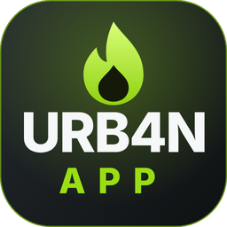
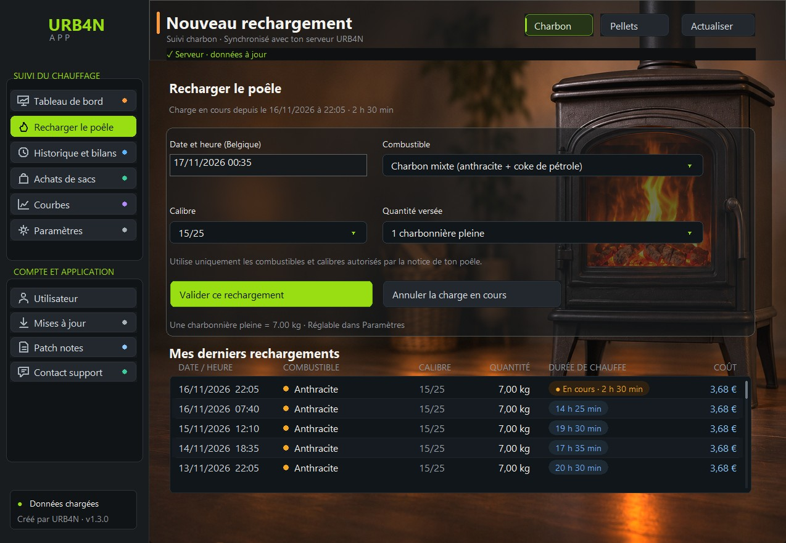
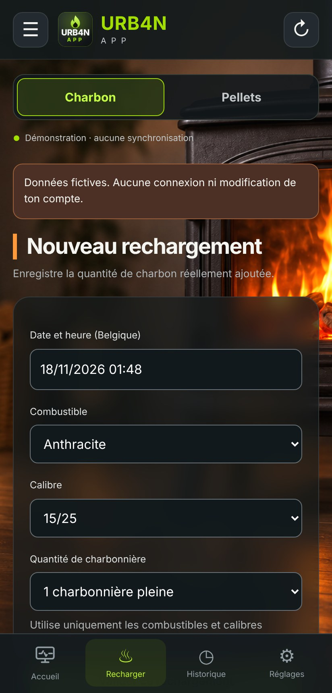

Windows et Android · Suivi personnel
Ton poêle.
Sous contrôle.
Note tes rechargements de charbon ou de pellets et tes achats de sacs. URB4N APP calcule ton stock, ton autonomie et ton coût par jour. Tes données sont enregistrées sur ton compte URB4N, retrouvables sur tous tes appareils, et l’application garde ta saisie hors ligne.
Application sans pub · Voir les captures

Ton stock
toujours à jour
Ton autonomie
en jours, avant de racheter
Ton coût par jour
et ton prix moyen du sac
Sur ton PC et ton téléphone
Le même suivi, partout.
Reconnecte ton compte Google sur un autre appareil et retrouve tes achats, tes rechargements et tes réglages.


Tout ce qu’il faut, rien de plus.
Chaque rechargement noté
Enregistre dates, combustibles, calibres et quantités. Consulte l’historique et les bilans par jour ou par mois.
Charbon ou pellets
Renseigne les poids vide et plein de ta charbonnière : l’application déduit le récipient et calcule les fractions versées. Pour les pellets, choisis tes sacs du ¼ de sac à 4 sacs.
Sur tous tes appareils
Reconnecte ton compte Google sur un autre appareil et retrouve ton suivi.
Comment ça marche
Installe
Télécharge l’application Windows ou Android et ouvre-la.
Connecte Google
Une inscription avec ton compte Google est requise pour accéder au suivi.
Note tes rechargements
Stock, autonomie et coût se mettent à jour tout seuls.
À l’intérieur de l’application
Un aperçu avant de te lancer.
Une interface sombre et tes outils de suivi à portée de main. Clique sur une capture pour l’agrandir.
Sur Windows
Ton chauffage en un coup d’œil
Stock, autonomie et consommation sur un seul écran.

Des achats faciles à suivre
Prix du sac ou total payé : l’autre montant est calculé.


Charbon et pellets, chacun son suivi
Combustible, calibre et quantité réellement versée.
Sur Android
Le tableau de bord, dans ta poche
Autonomie, stock et boutons rapides.


Un rechargement en quelques touches
Combustible, calibre et quantité.

Historique et durée de chauffe
Chaque rechargement, sa durée et son coût.
Captures avec des données fictives, réalisées avec les versions Windows 1.3.0.4 et Android 2.2.0.4.
Nouveautés
Nouvel anneau d’autonomie à deux cercles : le stock restant et l’avancement de la charge en cours. Alerte « Vérifie le poêle » : l’application apprend de tes charges et te prévient à 90 % de la durée attendue, par une notification Windows ou Android. Tu peux corriger ou supprimer un rechargement ou un achat directement dans leurs pages. Sous Windows : courbes en barres avec la prévision du stock jusqu’à zéro, et l’application reste près de l’horloge quand tu fermes la fenêtre.
Questions fréquentes
L’application Android est-elle prête ?
Oui, c’est la version 2.2.0.4, installée par fichier APK hors Google Play (Android 8 ou plus récent, appareil 64 bits avec services Google Play). Les mises à jour se font depuis la page « Mises à jour » de l’application.
Pourquoi Google affiche-t-il un avertissement ?
Le projet Google est en Production, mais la validation Google est encore en préparation : un avertissement et un plafond de connexions peuvent s’appliquer. Aucun compte Google n’est fourni avec l’application, et une installation vierge nécessite encore une configuration de connexion fournie par l’éditeur.
Pourquoi connecter Google ?
Google sert uniquement à prouver qui tu es (adresse e-mail et identifiant). Ton compte URB4N est créé à la première connexion et tes données sont enregistrées sur le serveur de l’éditeur, sans accès à ton Drive.
Comment contacter le support ?
Dans l’application, le menu « Contact support » (bouton « Créer un ticket ») envoie volontairement un titre, une description et, si tu le souhaites, une capture. Ces rapports sont conservés sur le serveur de l’éditeur. Tu retrouves ensuite la conversation dans la même page.
Comment mettre à jour l’application ?
Les mises à jour se font directement depuis l’application. Elle te propose la nouvelle version au démarrage.
Tes données restent à toi.
Google sert uniquement à t’identifier. Chaque utilisateur a son propre espace privé. Lire la confidentialité